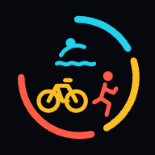

Opening your coach…
Open Trivo
Install this page to get the Trivo icon: Android Chrome › ⋮ › Install app · iPhone Safari › Share › Add to Home Screen · Chrome/Edge desktop › install icon in the address bar.